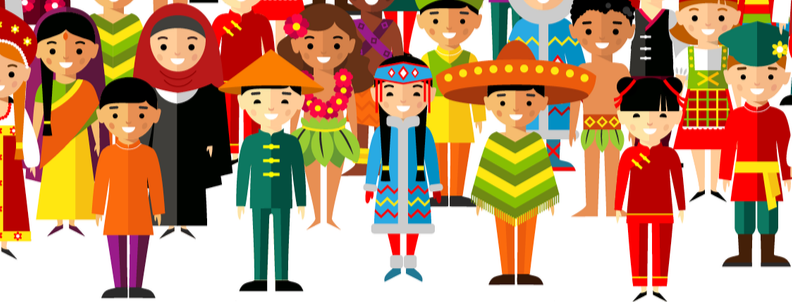

La cultura es uno de los bienes más preciados de la humanidad, puesto que gracias a ella se conoce la mayor parte de la historia del mundo teniendo en cuenta que a lo largo de los años se han ido sucediendo diferentes civilizaciones, cada una con sus costumbres, tradiciones y formas de vida. Además, todas las culturas que se conocen hoy en día tienen algo en común y es que han dejado un legado importante a la sociedad. Algunas en mayor medida, otras menos, pero todas han querido aportar su granito de arena para hacer que la cultura global tenga una gran riqueza y pueda considerarse un verdadero tesoro. Cultura se refiere al conjunto de bienes materiales y espirituales de un grupo social transmitido de generación en generación a fin de orientar las prácticas individuales y colectivas. Incluye lengua, procesos, modos de vida, costumbres, tradiciones, hábitos, valores, patrones, herramientas y conocimiento. La función de la cultura es garantizar la supervivencia y facilitar la adaptación de los sujetos en el entorno. Cada cultura encarna una visión del mundo como respuesta a la realidad que vive el grupo social. No existe, por lo tanto, ningún grupo social carente de cultura o "inculto". Lo que sí existe son diferentes culturas y, dentro de estas, diferentes grupos culturales, aun con respecto a la cultura dominante. El término cultura también se emplea en sentidos restringidos, bien para referir los valores y hábitos que rigen a grupos específicos, o bien para referir ámbitos especializados de conocimiento o actividad. En ambos casos, la palabra cultura siempre va acompañada de un adjetivo calificativo. El concepto de cultura ha variado a lo largo de la historia. En su origen etimológico, la palabra cultura proviene del latín cultus que significa “cultivo” o "cultivado". Este término es el participio pasado de la palabra colere que significa 'cultivar'. En la Edad Media, cultura designaba un terreno cultivado. En el renacimiento apareció la idea del hombre "cultivado", es decir, alguien instruido en literatura y bellas artes. A partir del siglo XVIII, se comenzó a usar sistemáticamente el término cultura para referir al conocimiento ilustrado. En el siglo XIX cultura abarcó también los buenos modales y costumbres. Cultura es un término que tiene muchos significados interrelacionados. Por ejemplo, en 1952, Alfred Kroeber y Clyde Kluckhohn recopilaron una lista de 164 definiciones de cultura en Cultura: una reseña crítica de conceptos y definiciones; y han clasificado más de 250 distintas. Cuando hablamos de cultura nos referimos a un término amplio, muy abarcador, en el que están contempladas las distintas manifestaciones del ser humano, en oposición a sus aspectos genéticos o biológicos, a la “naturaleza”. Sin embargo, presenta diversas formas de entenderse.